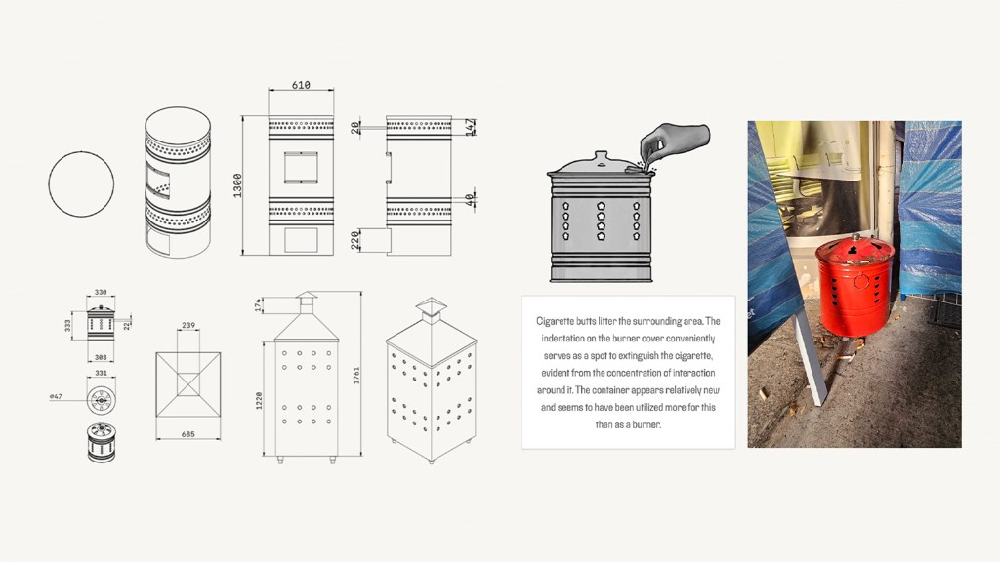
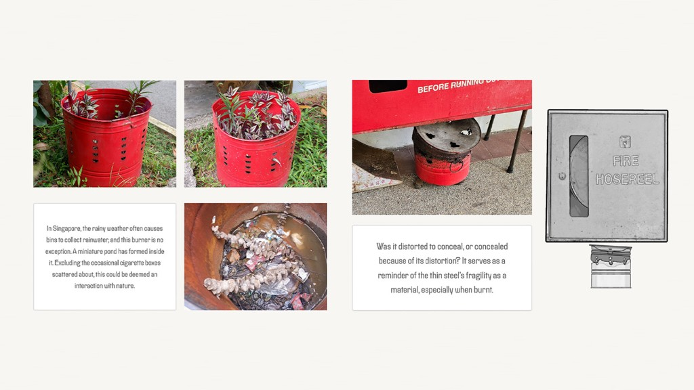
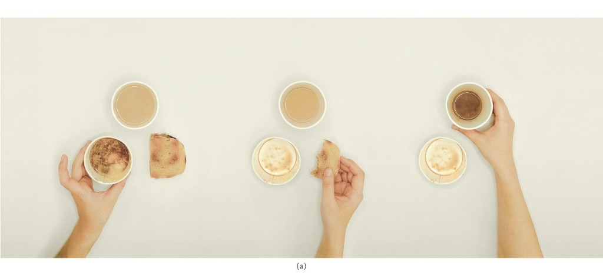
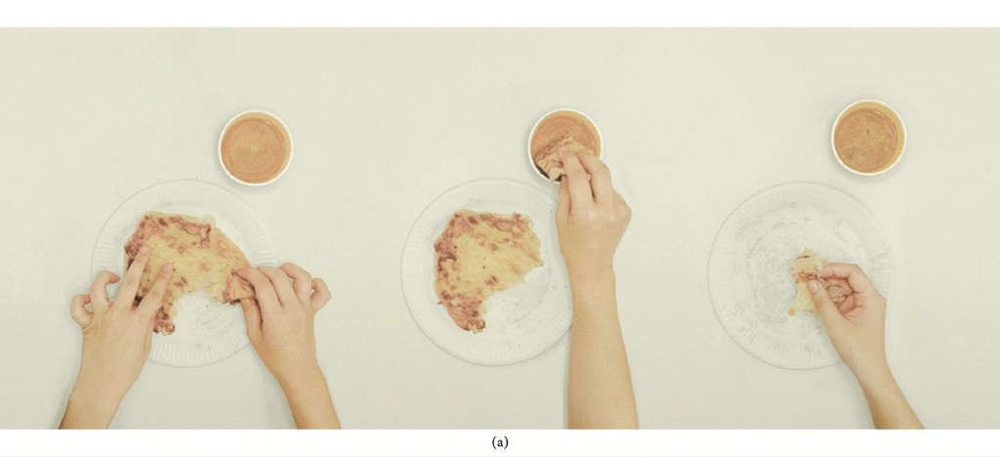
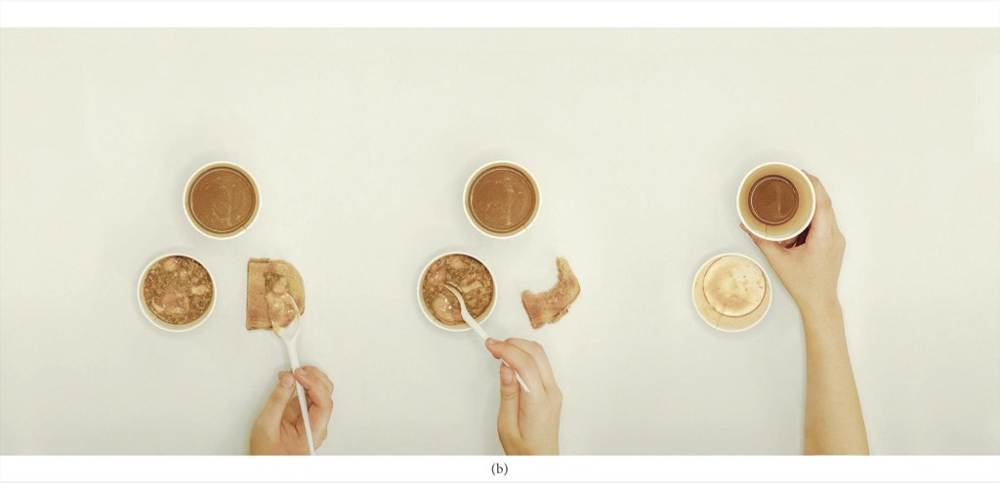
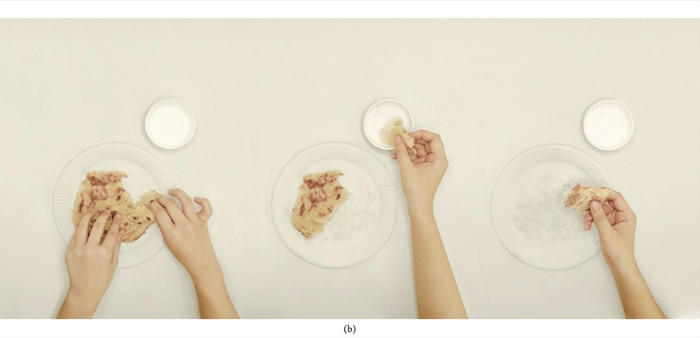
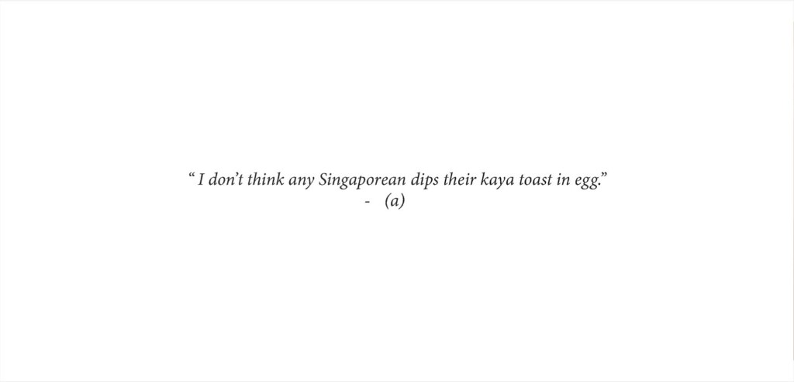
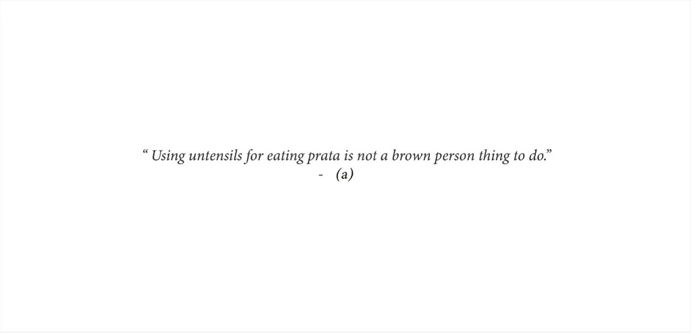
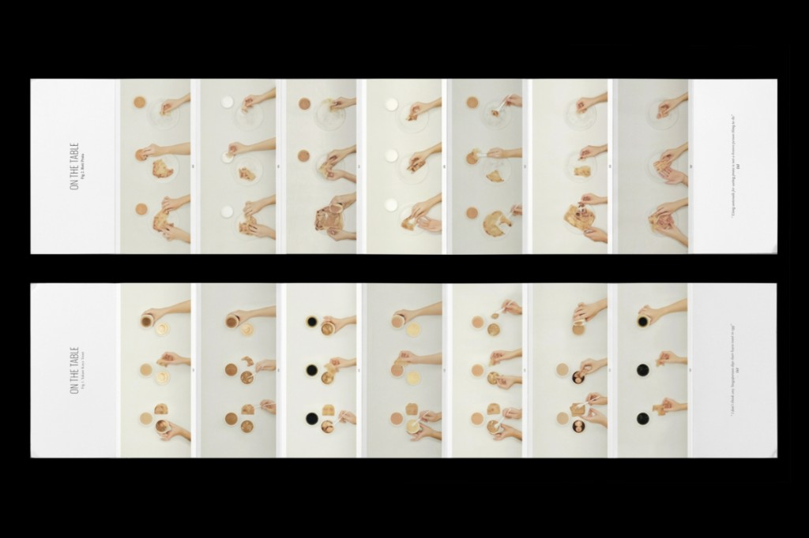

Seemingly trivial things are the second interest in the third section of Yunso's Triangle, along with Self. The interest is in observing things that seem functionless or trivial.
The examples here come from personal journaling she did while in Singapore, a multicultural city of people from many backgrounds and religions.
Seemingly trivial things are the second interest in the third section of Yunso's Triangle, along with Self: things that seem functionless or trivial. The examples come from journaling in Singapore, a multicultural city of many religions.
Incense burners
While there, she made a report on the incense burners around the city.[1] Their placement and state make an unofficial layer of urban design, shaped by everyday behaviour.
Pairs are common in front of homes and on Housing and Development Board void decks, some issued to regulate the burning of joss paper and others personal bins that residents placed outside the communal ones. The report also finds them hidden, disordered, or distorted, and what looks like damage can also be a sign of use. Those still in use sit by Taoist altars or offerings, or have been turned into bins.
It records the unique tension between regulation and freedom in Singapore, and between the community and the individual.
A report on incense burners as an unofficial layer of urban design.[1] Pairs sit on Housing and Development Board void decks, some for joss paper and some as personal bins. Those still in use sit by Taoist altars or have become bins. The report records a tension between regulation and freedom.
-

Report 1 -

Report 2
Cuisines
She also documented how different Singaporean locals ate the same dish. One booklet follows roti prata. The other follows Ya Kun toast. Something ordinary can show differences in habit and cultural background.[2]
Two booklets follow how locals eat the same dish: roti prata and Ya Kun toast.[2]







References
- Jung, Yunso. Incense burners. jungyunso.com. ↑
- Jung, Yunso. On the Table. jungyunso.com. ↑